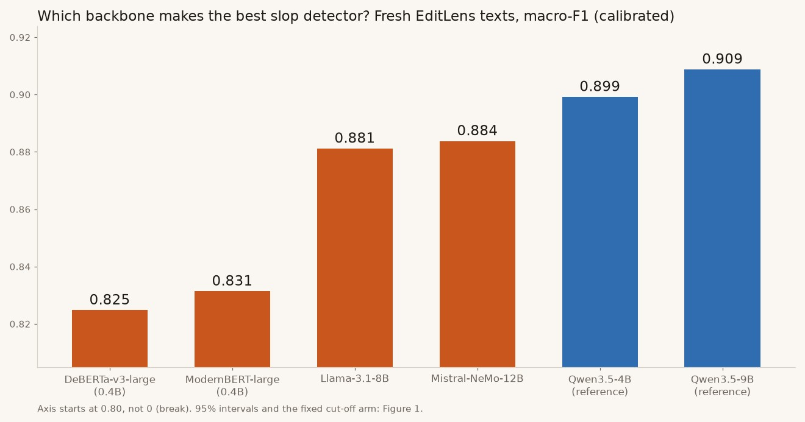
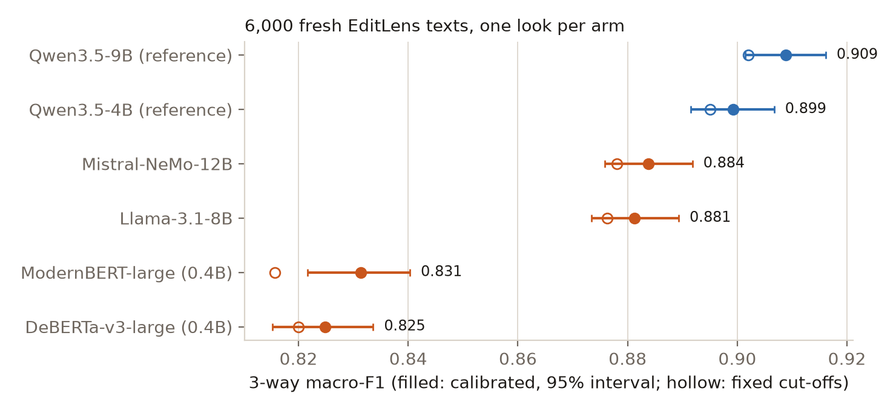
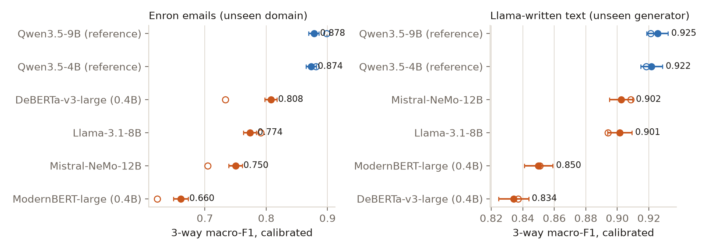
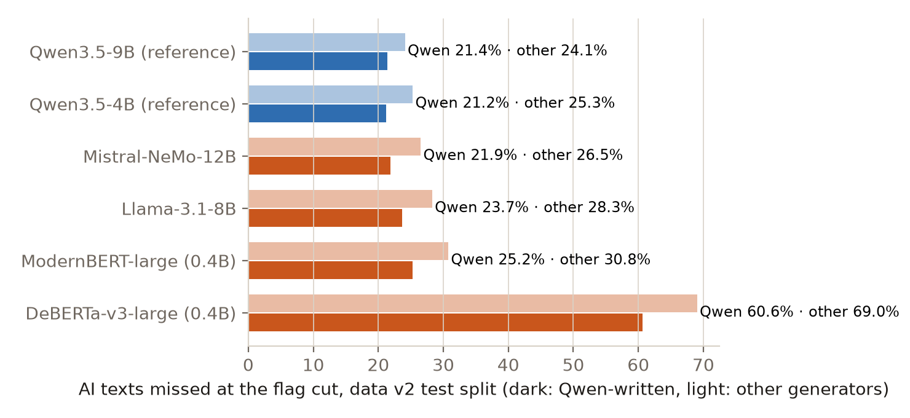
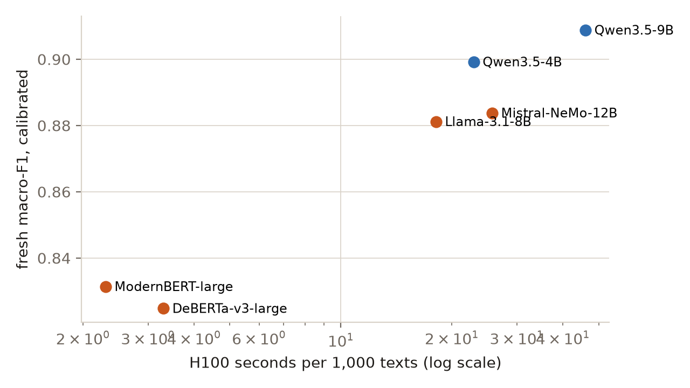

← Research·Experiments·
Slop detector backbones: on the same data, no other base beats Qwen3.5-9B, and the gap opens off-domain
Published AI-text detectors are built on Mistral, Llama and small encoders, and our slop detector was built on Qwen alone. With the data, recipe and tests held fixed, four other backbones each took one look at 6,000 fresh EditLens texts. All four trail Qwen3.5-9B. The biggest gap is on emails: the LLM backbones still tell human from AI, but they call about half of fully AI-written emails merely “AI-edited”.

Summary: the short answer and the key results
In short
Would the slop detector have been better on the backbone published detectors use?
Not on our data. With everything else fixed, Mistral-NeMo-12B (Pangram’s production backbone) and Llama-3.1-8B each trail Qwen3.5-9B by about 0.03 macro-F1 on 6,000 fresh EditLens texts, and two 0.4B encoders trail by about 0.08. All four tell human from AI text nearly as well (AUROC 0.946–0.968 against 0.972). What they lose is the middle of the scale. On Enron emails, Mistral and Llama call 54% and 50% of fully AI-written emails “AI-edited”, against 17.5% for Qwen3.5-9B. A Qwen detector did not favour Qwen-written text, and a Llama detector did not favour Llama-written text. One caution: the data and recipe were built while training Qwen, so this is a comparison on Qwen’s home ground.
Key results
| What we tested | Result | Compared with |
|---|---|---|
| Does another backbone beat Qwen3.5-9B on the fresh test (one look per arm)? | No. Mistral-NeMo-12B 0.884, −0.025 [−0.031, −0.019]; Llama-3.1-8B 0.881, −0.028 [−0.034, −0.021]; ModernBERT-large 0.831, −0.077; DeBERTa-v3-large 0.825, −0.084 | Qwen3.5-9B 0.909 [0.901, 0.916] (calibrated); Qwen3.5-4B 0.899 |
| Out of distribution: Enron emails (unseen domain) | The gap widens: Llama 0.774 (−0.104), Mistral 0.750 (−0.128), DeBERTa 0.808 (−0.070), ModernBERT 0.660 (−0.218) | Qwen3.5-9B 0.878 |
| What is lost on Enron? | Not detection: AUROC (human vs any AI) 0.985 for Llama and Mistral. Fully AI-generated emails called “AI-edited”: Mistral 54.1%, Llama 49.6%, ModernBERT 70.7% | Qwen3.5-9B: AUROC 0.984, 17.5% called edited |
| Out of distribution: Llama-written text (unseen generator) | Mistral 0.902, Llama 0.902, ModernBERT 0.850, DeBERTa 0.834. No own-family gain for the Llama detector (P5 missed) | Qwen3.5-9B 0.925 |
| Does a Qwen detector learn “Qwen-ness” (data v2 is 27% Qwen-written AI text)? | No. Every detector misses Qwen text less than other AI text; Qwen3.5-9B’s gap is the smallest (2.8 points, against 4.6–4.7 for Mistral and Llama) | P4: within ±2 points of the non-Qwen LLMs, hit (−1.9) |
| Style imitations (Epoch AI) and human flags at a 1%-of-our-humans cut | Imitations missed: Mistral 27/297, Llama 34, ModernBERT 48, DeBERTa 36. Human Detectors humans flagged: 7, 9, 16, 4 of 150 | Qwen3.5-9B: 7/297 missed, 3/150 flagged |
| Cost | Training on one H100: Llama $7.2 (1.8 h), Mistral $10.4 (2.5 h), DeBERTa $1.3, ModernBERT $0.8. Scoring: 2–3 s per 1,000 texts for the encoders, 18–26 s for the LLMs | The whole bake-off: $29 of Modal time |
01Introduction
Ask a chatbot to write a sales email from scratch and a good AI-text detector should say “AI-generated”. Ask it to fix the grammar in an email you wrote and the detector should say “AI-edited”, or nearly human. Our slop detector, a Qwen3.5-9B trained in the slop-detector note, puts every text on that scale. This note asks whether the base model under it was the right choice.
What is known. Most published detectors are not built on Qwen. EditLens, the benchmark we score on, found its best model on a Mistral Small 24B backbone, and Pangram’s production detector is a Mistral NeMo 12B with LoRA (EditLens; Pangram at GenAI Detection Task 3). A 16-model comparison found Llama and Mistral the strongest families for per-family detection and Qwen the weakest (arXiv 2601.20006). Small encoders win shared tasks: a DeBERTa-v3-base won the COLING 2025 English track.
What is missing. Those comparisons change the data along with the backbone, or test only in distribution, where every backbone scores about the same. Our note trained only Qwen. Its data was also partly written by Qwen models, so a Qwen detector might partly be spotting “Qwen-ness” rather than AI writing.
With the data, recipe and tests held fixed, does another backbone make a better slop detector than Qwen3.5-9B?
What this note does. It trains four other backbones on the same data with the same recipe, picks each one’s learning rate on validation only, and scores each once on the same frozen fresh test. Its contributions:
- A controlled backbone comparison: two LLMs from the families the literature favours and two encoders, against the Qwen references, on identical rows with paired intervals.
- A finding about where backbones differ: not in telling human from AI, but in placing AI text on the edited-to-generated scale, which breaks on an unseen domain.
- A check of the “Qwen-ness” worry: a split of our own test set by which model wrote the AI text.
- Costs per arm, and code that adds a backbone in one table row.
Success, fixed before any held-out score in a pre-registered plan: (1) the references reproduce the earlier note’s numbers on our scoring; (2) every arm sees the same training rows and is scored on the same test rows; (3) no test text is tuned on, and the fresh set is looked at once per arm; (4) “beats” or “trails” is claimed only when the paired 95% interval excludes zero.
02Setup
2.1 The task and the labels
A detector reads the first 512 tokens of a text and gives a score from 0 (human) to 1 (AI-generated). Two cut-offs turn the score into three classes: human, AI-edited (a person wrote it, an LLM changed it) and AI-generated. The score is the expected class of a 4-bucket head (buckets 0–3, divided by 3), trained with cross-entropy on data v2 relabelled by how each text was made, exactly as the earlier note’s final model.
The macro-F1 score averages the per-class F1 over the three classes, so a detector that confuses edited and generated text loses as much as one that confuses human and AI. AUROC asks only the yes/no question: the chance a random AI text (edited or generated) scores above a random human one.
2.2 The arms
| Arm | Base | Parameters | Recipe | Chosen lr |
|---|---|---|---|---|
| Qwen3.5-9B (reference) | the earlier note’s final run, not retrained | 9B | LoRA r 16, bf16 | 2e-4 |
| Qwen3.5-4B (reference) | the earlier note’s 4B run, not retrained | 4B | LoRA r 16, bf16 | 2e-4 |
| Mistral-NeMo-12B | mistralai/Mistral-Nemo-Base-2407 | 12.2B | LoRA r 16 on attention and MLP, head in full, bf16 | 4e-4 |
| Llama-3.1-8B | meta-llama/Llama-3.1-8B (base) | 8.0B | same | 2e-4 |
| ModernBERT-large | answerdotai/ModernBERT-large | 0.40B | full fine-tune, fp32 weights, bf16 compute | 2e-5 |
| DeBERTa-v3-large | microsoft/deberta-v3-large | 0.44B | same | 2e-5 |
Shared by every arm: the 79,120 training rows, 512 tokens with fenced code emptied, batches of at least 64 rows, a cosine schedule with 3% warm-up, 2 epochs and seed 0. The trainer is the earlier note’s 04_train.py, imported unchanged; only the model loader differs for the full fine-tunes.
2.3 Tests
All test only, never trained or tuned on: EditLens test (6,115 texts, in distribution), Enron (6,147 emails, an unseen domain), Llama (5,957 texts from an unseen generator), the fresh set (6,000 texts frozen in the earlier note, the headline), Human Detectors (150 human and 150 AI articles) and Epoch AI (495 human passages, 297 plain AI passages and 297 written to imitate a person). For the generator-family check we split data v2’s own test split (9,650 rows) by which model wrote each AI text.
Cut-offs come two ways, as in the earlier note: fixed at the bucket head’s 1/6 and 5/6, and calibrated, fitted on 2,396 clean EditLens validation texts. The yes/no benchmarks use a flag cut that flags 1% of each detector’s own validation humans.
03How the study was run
- Plan. Arms, tests, the learning-rate rule and five predictions were written and committed before any held-out score.
- Smoke runs (640 rows) on each arm checked loading, training and scoring. Two fixes came out of them: the LLMs ran out of memory at 8,192 tokens per forward pass, so they use the 2,048 the reference used, and DeBERTa’s tokenizer is loaded from a copy converted on the Mac (the Modal image misread its file).
- Learning-rate sweep: 12 runs, 3 rates per arm, 16,000 rows for 1 epoch each, scored on the first 2,000 validation rows. The rule picked the best (Mistral 4e-4; the others the middle value). The choice was committed before any test score.
- Training: 4 full runs, 2 epochs on all 79,120 rows, on H100s across three Modal workspaces.
- Reload check: each saved model rescored 2,000 validation texts and matched its training-time scores (correlation ≥ 0.9999).
- Scoring: each arm scored every test split once, including its one look at the fresh set. The Qwen references were scored on the splits they lacked (the 4B on all of them, the 9B on data v2’s test split).
- Analysis from saved scores only. It first checks that Qwen3.5-9B reproduces the earlier note’s fresh-set numbers (fixed 0.902, calibrated 0.909; both match).
| Fixed before any test score | Changed after reading results |
|---|---|
| Arms, data, recipe, epochs, tests, cut-off rules, claim rule, predictions; the learning-rate grid and rule; each arm’s chosen rate | Nothing in the runs. Added afterwards, as description only: the edited-vs-generated breakdown on Enron (Section 4.2) and the reload check |
Conditions: bf16 inference, 4,096 tokens per scoring pass, one H100 per run; seed 0 for every arm.
04Results
4.1 Every new backbone trails Qwen3.5-9B on the fresh test

Figure 1 shows the headline. The two LLM backbones land together, 0.025–0.028 below Qwen3.5-9B, with paired intervals well clear of zero (Mistral −0.025 [−0.031, −0.019], Llama −0.028 [−0.034, −0.021]). They also trail the smaller Qwen3.5-4B (0.899). The two encoders sit another 0.05 lower. The fixed cut-offs give the same order (9B 0.902, Mistral 0.878, Llama 0.876, DeBERTa 0.820, ModernBERT 0.816), so calibration does not explain the ranking.
4.2 Off-domain, the LLM backbones still detect AI text but mislabel how much

On Llama-written text (Figure 2, right) the ranking is the fresh one, a little higher. On Enron emails (left) the gap opens: Mistral falls to 0.750 and Llama to 0.774, against 0.878 for Qwen3.5-9B. DeBERTa, last on the fresh set, comes third here.
The Enron loss is not a loss of detection. Asked only “human or AI?”, Mistral and Llama score AUROC 0.985 on Enron, level with Qwen3.5-9B (0.984), and they flag about as few human emails. What breaks is the edited/generated boundary:
| Arm | AUROC, Enron | AI-generated called “edited”, EditLens test | AI-generated called “edited”, Enron |
|---|---|---|---|
| Qwen3.5-9B | 0.984 | 2.5% | 17.5% |
| Mistral-NeMo-12B | 0.985 | 2.8% | 54.1% |
| Llama-3.1-8B | 0.985 | 4.6% | 49.6% |
| ModernBERT-large | 0.977 | 12.2% | 70.7% |
| DeBERTa-v3-large | 0.965 | 6.4% | 26.6% |
A fully AI-written email is, for Mistral, closer to a coin flip between “edited” and “generated” (1,847 such emails; calibrated cut-offs). Our training data has no emails, so a backbone has to carry its sense of “how AI is this?” across from reviews, news and forum posts. Qwen3.5 carries it best. Our data cannot tell us why: Qwen3.5’s pretraining, its hybrid attention, or simply that the recipe was tuned on Qwen.
4.3 No sign that the Qwen detector learned “Qwen-ness”

If the Qwen detector had learned to spot Qwen’s style, it would miss Qwen-written text much less often than other AI text, and more so than the other detectors. Figure 3 shows the opposite. Every detector finds Qwen text easier, and Qwen3.5-9B’s gap is the smallest: 2.8 points, against 4.7 for Mistral and 4.6 for Llama. Prediction P4 (within ±2 points of the non-Qwen LLMs) is a hit at −1.9. The same holds for Llama: the Llama detector gains nothing on Llama-written text relative to EditLens test, compared with Mistral (P5 missed, −0.0002).
DeBERTa’s 60–69% misses come from its flag cut, not its ranking. Its scores for human validation texts spread high, so the cut that flags 1% of them sits at 0.75, and many AI texts score below it (AUROC on this split 0.95).
4.4 More missed imitations and more flagged humans
| Arm | Epoch AI imitations missed (of 297) | Epoch AI plain missed (of 297) | Epoch AI humans flagged (of 495) | Human Detectors humans flagged (of 150) | Human Detectors AI missed (of 150) |
|---|---|---|---|---|---|
| Qwen3.5-9B | 7 | 0 | 1 | 3 | 0 |
| Qwen3.5-4B | 13 | 0 | 3 | 3 | 0 |
| Mistral-NeMo-12B | 27 | 0 | 7 | 7 | 0 |
| Llama-3.1-8B | 34 | 0 | 10 | 9 | 0 |
| ModernBERT-large | 48 | 0 | 5 | 16 | 0 |
| DeBERTa-v3-large | 36 | 5 | 5 | 4 | 37 |
At the same rule for the flag cut, the new backbones miss 4–7 times as many AI passages written to imitate a person, and flag more human writing. No arm misses a plain AI passage except DeBERTa.
4.5 The encoders are ten times cheaper to run, and 0.08 worse

Training cost per arm on one H100: Llama $7.2 (1.8 hours), Mistral $10.4 (2.5 hours), DeBERTa $1.3 and ModernBERT $0.8, plus $0.3–2.6 for each arm’s sweep. The whole bake-off, smoke runs and reference scoring included, used $29 of Modal time. ModernBERT scores 1,000 texts in 2.3 seconds. That makes it a cheap first pass in front of a 9B: score everything with the encoder, and send only the unsure cases to the large model.
4.6 Predictions
| # | Prediction | Threshold | Result | Hit? |
|---|---|---|---|---|
| P1 | No new arm beats Qwen3.5-9B on the fresh test by much | best new − 9B < +0.015 | −0.025 (Mistral) | Hit |
| P2 | Mistral-NeMo-12B is the best arm out of distribution | highest mean of Enron and Llama | Qwen3.5-9B 0.902; Llama 0.838; Mistral 0.826 | Miss |
| P3 | Encoders trail the best LLM backbone | gap ≥ 0.03 | 0.052 | Hit |
| P4 | No Qwen-ness | within ±2 points | −1.9 | Hit |
| P5 | Llama gains on Llama text | > 0 | −0.0002 | Miss |
P1’s hit is weak: it would also have hit had Mistral won by 0.01. Post-mortem. Surprise: how far behind the families the literature favours fell, and that the loss sits on the edited/generated boundary, not on detection. What I’d change: sweep the reference too, and add an email-domain validation set so the edited/generated cut-offs can be checked off-domain. Lesson: a binary AUROC hides most of what separates 3-way detectors; report the confusion off-domain.
05Implications for AI safety
Detectors like these are used as monitors (is this text AI-written?) and as rewards (how much AI is in it?). The two uses part ways here. As a yes/no monitor on an unseen domain, every LLM backbone we tried is about as good as the next (AUROC 0.984–0.985 on Enron). As a graded score, the backbone decides whether a fully AI-written email reads as “lightly edited”: Mistral and Llama say so half the time. A policy trained against such a score could learn that the cheapest way to look human is to move into a domain the detector never saw. Before using a detector’s score as a reward or a grade, check its edited-vs-generated confusion on the domain it will see, not just its AUROC.
06What this does not show
- Home advantage. The data mix, the 4-bucket labels, the head and the learning rate were all developed while training Qwen. A backbone that needs a different recipe could do better with one. We gave each new arm a learning-rate sweep the reference never had, and nothing else.
- One seed per arm. A second 4B seed in the earlier note moved validation macro-F1 by about 0.004. The LLM gaps here (0.025–0.028) are several times that, but the order between Mistral and Llama (0.003 apart) is not settled.
- Short sweeps. Each learning rate was judged after 16,000 rows; the full runs saw 158,000. A rate that only pays off late would be missed.
- No humanizers, no Pangram. The slop-detector data has no humanizer split, and the commercial Pangram API was not run.
- Sizes differ. The arms range from 0.4B to 12B. This is a comparison of practical choices, not of architectures at matched size.
07Reproduce it
experiments/slop-detector-backbones/reproduce.sh --scores recomputes every number and figure from the saved scores, and checks first that the Qwen3.5-9B reference reproduces the earlier note. --dry-run lists every command: deploy the Modal app, upload data v2 and the test texts, sweep, choose, train, score, analyse. Inputs are those of the slop-detector note (its data v2 with 4 buckets, the EditLens clone, Epoch AI’s detector test) plus a Hugging Face token with Llama-3.1 access.
08What’s next
A second round with the same data, recipe and tests: Gemma-3-12B (Gemma has SAEs, useful for reading what the detector reads), Qwen3-14B-Base (the base of the PAN 2025 winner) and Nemotron. After that, an email validation set to calibrate the edited/generated cut-offs off-domain, and a rewriter trained against the detector, to see whether the domain gap is the first thing it finds.
09Questions and answers
Pangram uses Mistral NeMo. Does this mean their choice is wrong?
No. Pangram trains on far more and more varied data, with hard-negative mining, and tunes for a binary yes/no on RAID. On our data and our 3-way task, Mistral-NeMo-12B trailed Qwen3.5-9B by 0.025, and its yes/no AUROC on emails matched it.
Is a 0.4B encoder good enough?
For a cheap first pass, yes: ModernBERT-large scores 1,000 texts in 2.3 seconds, with AUROC 0.956 on the fresh set. As the final judge, no: it loses 0.08 macro-F1 and flags 16 of 150 human articles at our cut.
Did training data written by Qwen inflate the Qwen detector?
Not that we can see. On our own test split every detector found Qwen-written text easier to catch, and the Qwen detector’s advantage on it was the smallest (Section 4.3).
AAppendix: files and citation
A.1 Files
| File | Contents |
|---|---|
results/bakeoff.json | Per arm: calibrated cut-offs and flag cut; per split n, auroc, fixed, calibrated, their 95% intervals and paired differences against Qwen3.5-9B (diff, ci); Human Detectors and Epoch AI flags and misses; generator-family miss rates and AUROC; cost; the scored predictions; total spend |
results/enron_confusion.json | Share of AI-generated texts called edited, and of human texts called AI, on EditLens test and Enron |
results/lr_choice.json | Sweep validation macro-F1 per learning rate and the chosen rate, per arm |
results/spend.jsonl | One row per paid call: time, what, GPU, seconds, estimated dollars, Modal workspace |
runs/bb-<arm>/ | config.json, log.jsonl (loss per 10 steps, validation per epoch), val_scores.json, timing.json, scores/<split>.json (one score per benchmark row, in the benchmark’s order) |
runs/sweep-<arm>-<lr>/, runs/ref-<arm>/ | Sweep runs; reference scores for splits the earlier note had not scored |
A.2 How to cite
Lie, A. (2026). Slop detector backbones: on the same data, no other base beats Qwen3.5-9B, and the gap opens off-domain.
steerlab. https://albertlieyingadrian.github.io/steerlab/experiments/slop-detector-backbones/report/